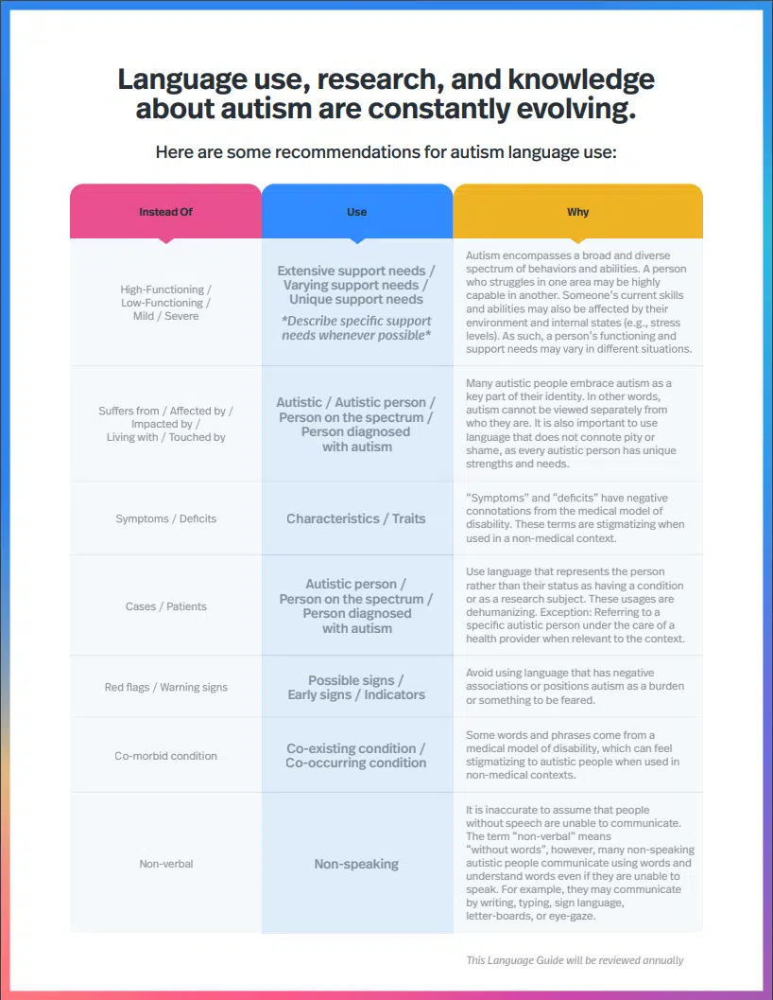

ASD (autism spectrum disorder) affects about 1 in 100 children in the world. This is so important because some people have a difficult time recognizing someone has the disorder and it is important to educate on the topic. Educating people on the topic and spreading awareness for ASD can bring positivity to the community and leave a great impact in people's lives. In recent years, there has been more awareness brought to sight to the public view on the topic of ASD. But, it is still very important to this day to promote acceptance of individuals with autism.
Always remembering people with autism have inspirations and goals just like everyone else is one of the first steps to being more accepting towards people with ASD. Also, we can educate ourselves and others of the symptoms of the disorder and how we can mitigate issues when provided with the information. Ways we can educate ourselves are reading different articles on the topic, talking to someone that struggles with the disorder first hand, or even just using social media.
How can we help?
We can also help by donating to charity or even working with people that have autism and letting them know that they are accepted and loved for who they are. By doing things to spread awareness, we can get rid of the stigma surrounding autism and help build up the community by increasing awareness for people who have ASD. All in all, doing this will lead to inclusiveness and friendliness surrounding those who have autism spectrum disorder.
Using proper language
 Table for good language use practices: Parkinson, Carlie. “2 Great Tools for Autism Awareness Month.” BC Parent Newsmagazine, BC Parent, 7 Apr. 2023, https://bcparent.ca/awareness/great-tools-for-autism-awareness-month/.This table shows better words to use in reference of Autism and Autistic people. One notable aspect is how we should use "characteristics/traits" instead of "symptoms/deficits".
Information by Indiana University Bloomington: Indiana Resource Center for Autism Staff Article on supporting those with Autism" · Image by BC Parent